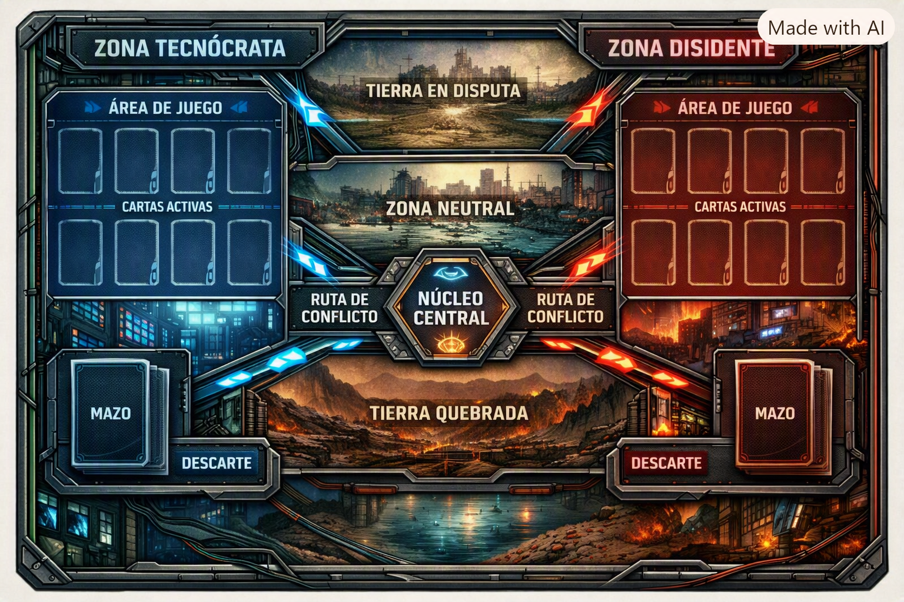
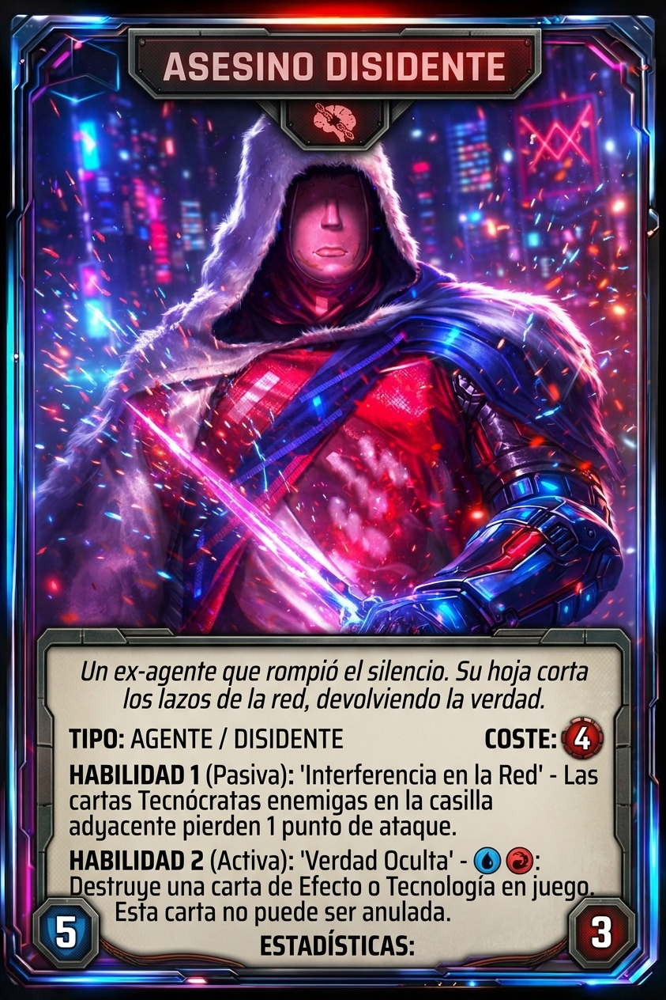
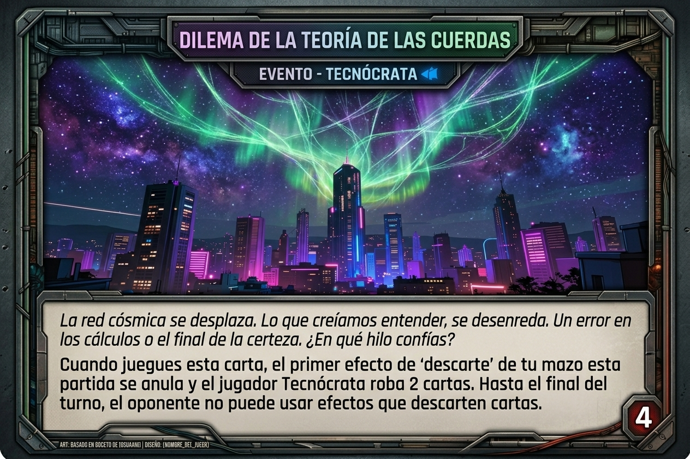
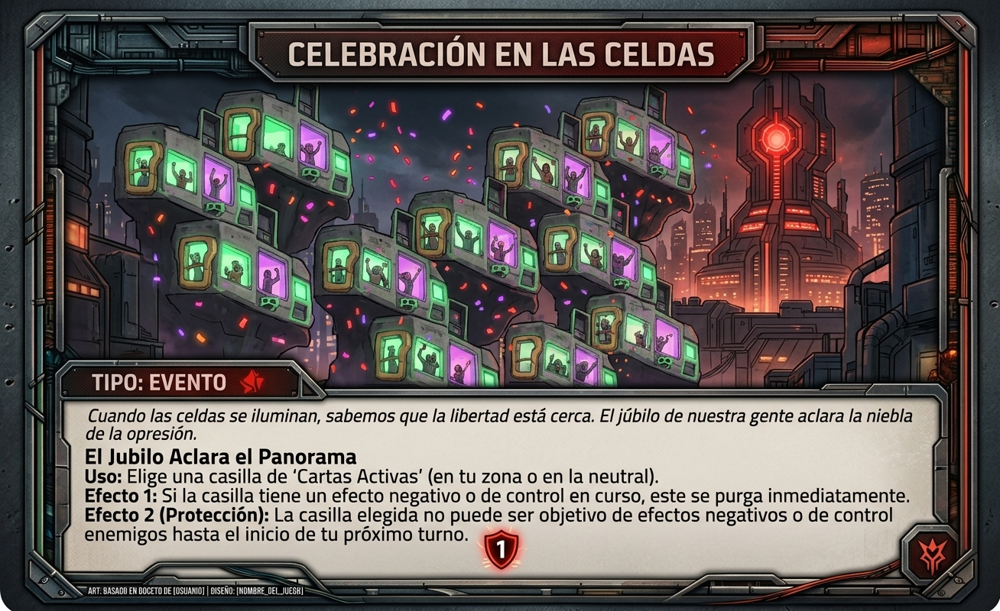
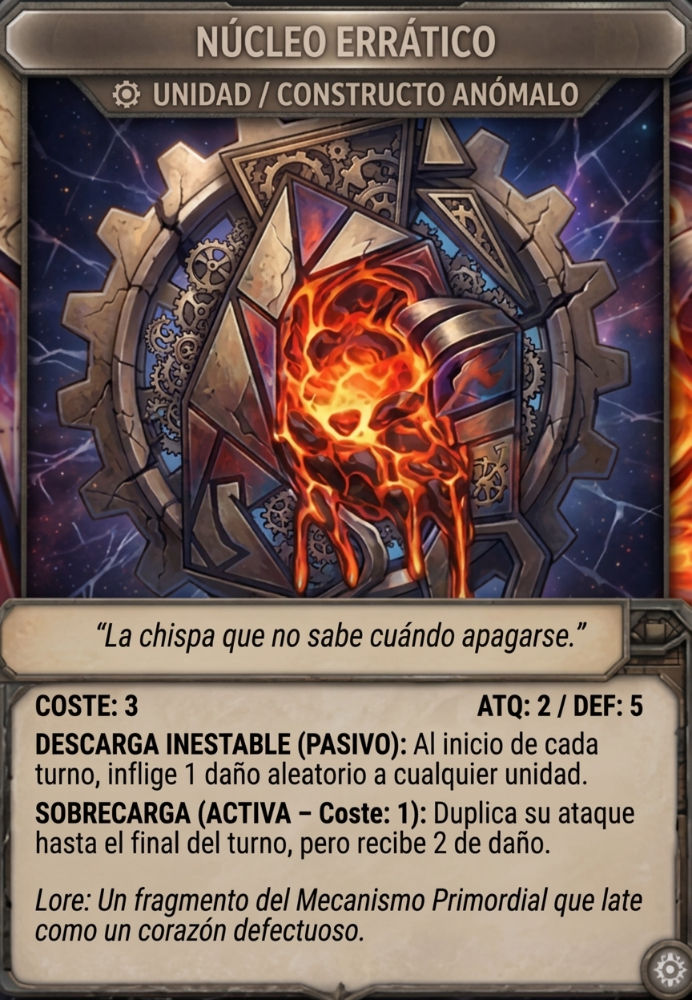

El conflicto es eterno. El Núcleo, de cristal.
N.C. – Núcleo de Cristal es un TCG de estrategia y conflicto por turnos donde Tecnócratas y Disidentes se enfrentan en un tablero polarizado. Cada carta representa sucesos sociales, económicos o giros históricos que alteran el frágil equilibrio del Núcleo. La victoria, conocida como «Caín», no llega por destruir al hermano, sino por romper el cristal que los une.
El campo de batalla dividido en zonas estratégicas: Zona Tecnócrata, Zona Disidente, Rutas de Conflicto y el Núcleo Central.

Algunas de las unidades y sucesos que alteran el destino de la partida:

Unidad / Agente Disidente

Evento / Tecnócrata

Evento / Purga & Protección

Constructo Anómalo
El Núcleo Central acumula rasgos por turno. Si un rasgo queda en negativo, potencia al opuesto. Si el núcleo llega a 0, se rompe → victoria del rival.
Filosofía: Progresismo / Individualismo. Camino del lobo de Wall Street argentino, buscando el ideal occidental.
Recurso Clave: Acumulan Infamia.
Filosofía: Lealtad / Caos / Liberación. Los liminales: dentro pero en los márgenes, resistencia y emancipación.
Recurso Clave: Acumulan Honor.
Cada 4 turnos cambia la estación, alterando las condiciones del mapa:
| Estación | Efecto Climático / Político |
|---|---|
| Primavera | Alianzas y tratados (+10 resistencia). |
| Verano | Conflictos intensificados (+1 ataque). |
| Otoño | Desgaste social (−5 fuerza en pasivas). |
| Invierno | Ingreso reducido a 15 puntos; cartas que suman ahora restan. El invierno fuerza equilibrio y riesgo de ruptura. |
El juego refleja el dualismo argentino: Unitarios vs Federales, Occidentales vs Orientales, osos polares vs pingüinos. Humor, conflicto y narrativa épica. No existe la muerte, solo la rendición: un hermano se impone sobre el otro.
Condición de victoria: "Caín"
El núcleo roto equivale a derrota inmediata. El final lleva el título "Caín" → no por matar al hermano, sino por venderse a los de afuera. "Los devoraron los de afuera."